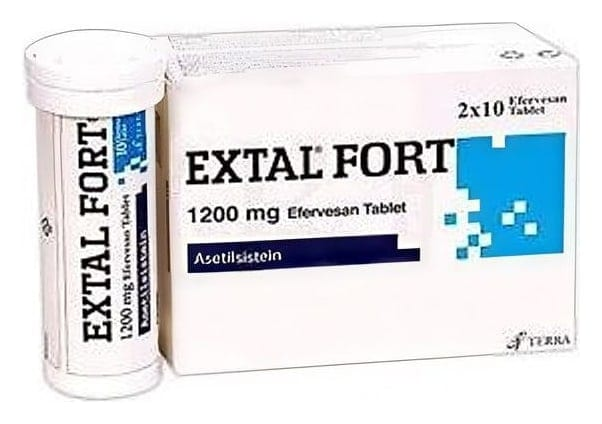

Extal Fort 1200 mg Efervesan Tablet, 20 Adet

Ne için kullanılır
KT · Bölüm 1EXTAL FORT, beyaz renkte yuvarlak efervesan tabletler şeklindedir. 20 (2x10) efervesan tablet, moleküler sieve ve silika jel içeren kapak ile kapatılmış polipropilen 2 adet tüp içerisinde piyasaya sunulmaktadır.
EXTAL FORT suda tamamen eritildikten sonra içilerek kullanılan bir ilaçtır.
EXTAL FORT etkin madde olarak asetilsistein içerir. Asetilsistein, bir amino asit olan sistein türevi bir ajandır. Balgam söktürücü etkiye sahiptir.
EXTAL FORT yoğun kıvamlı balgamın atılması, azaltılması, yoğunluğunun düzenlenmesi ekspektorasyonun (balgamın atılabilmesi) kolaylaştırılması gereken durumlarda, bronkopulmoner (bronş ve akciğer) hastalıklarda, bronşiyal sekresyon (solunum yolu salgısı) bozukluklarının tedavisinde kullanılan mukolitik (balgam, mukusu parçalayan) bir ilaçtır.
Ayrıca yüksek doz parasetamol alımına bağlı olarak ortaya çıkan karaciğer yetmezliğinin önlenmesinde kullanılır.
EXTAL FORT, soğuk algınlığı ve soluk yollarının iltihaplanması (bronşit) durumunda balgam oluşmasını azaltır. Oluşan balgamları sulandırarak, öksürükle atılmasını kolaylaştırır.